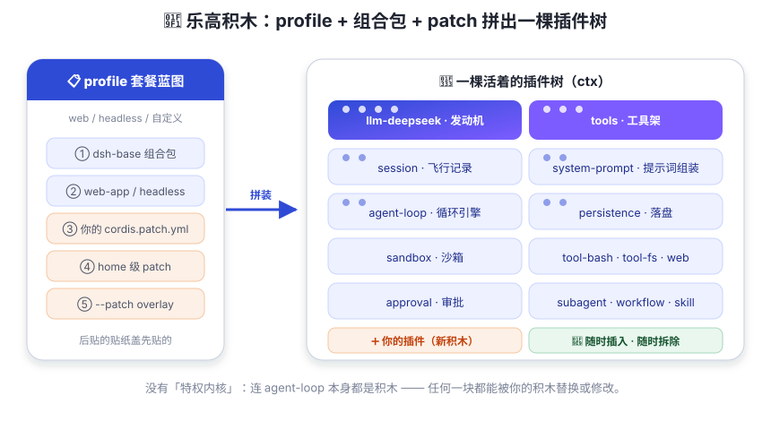

万物皆插件（乐高积木）
没有「特权内核」。模型适配器、工具、会话日志、循环本身 —— 全是积木，全可替换。
大多数软件像「买整机」：厂家把主板、显卡、电源焊死在一起。你想换个显卡？不好意思，请换整台机器——商家最爱这种顾客。
dsh 像「乐高」：每一块功能都是一块积木——模型适配器一块、工具注册表一块、会话日志一块，连「驱动 agent 循环」本身都是一块。想换模型？换积木。想加审批？插积木。嫌内置工具碍事？拆积木。拆装之间整台机器照常运转——这才是装机佬的快乐。

三个关键词，一次说清
① profile —— 套餐蓝图
profile 是存放在 Harness home（默认 ~/.dsh，可用 $DSH_HOME 改）里的
具名组装方案。它只回答一个问题：这套机器要装哪几个零件包？
dsh web用的是webprofile：浏览器界面版；dsh --profile headless "任务"用的是headlessprofile：命令行一次性跑任务，完全不带服务器；- 你还可以创建自己的 profile：
dsh --profile 我的方案启动$DSH_HOME/profiles/我的方案。
profile 目录里有自己的 package.json（在 dsh.profile.bundles 字段里列出要叠放的组合包）
和一个用户自己的 cordis.patch.yml。
② 组合包（bundle）—— 成套零件包
组合包是一个普通的 npm 包，但它自带「拼装说明书」：package.json 里声明
"dsh": { "bundle": { "patch": "./cordis.patch.yml" } }，
指向一个 cordis.patch.yml，里面写着要插入哪些插件行。
官方随发行版交付三个基础组合包：
| 组合包 | 装了什么 |
|---|---|
dsh-base | 每个 profile 的第一层：模型适配器、工具、持久化、沙箱与审批策略、设置、凭据、遥测。 |
dsh-web-app | 在 base 之上增加浏览器应用（Web UI）。 |
dsh-headless | 在 base 之上增加一次性运行器，完全不带服务器。 |
③ patch —— 贴纸图层
patch 是一层「贴纸」：用 insert 往树上加新积木，
或者按 id 定位某块积木并整块替换它的 config（不深合并，后贴的盖先贴的）。
① 空条目列表 → ② 每个组合包的 patch（按 profile 里 bundles 的顺序）→
③ profile 自己的 cordis.patch.yml → ④ home 级 $DSH_HOME/cordis.patch.yml →
⑤ 命令行 --patch <路径> 的覆盖层。
想看你机器上实际拼出了什么？dsh --profile web --dump-config 会把整棵树打印出来，
而且每一行都标注了它来自哪一层 —— 打印出的任何条目，你都能用 patch 替换。
「没有特权内核」到底牛在哪？
传统框架里总有一块「神圣不可侵犯」的核心，你想改它得 fork 整个项目。 dsh 的哲学是：扩展 dsh 的方式就是把插件挂到其他插件旁边。 没有需要打补丁的特权内核，所以：
- 换模型：注册一个新适配器即可（第 03、06 章展开）；
- 改行为：监听事件、替换结果，不用动循环代码；
- 卸得干净：每个插件在卸载时会自动撤销自己的所有注册（这是 Cordis 的「可逆副作用」，下一章讲）。
打开仓库里的 packages/bundle/base/cordis.patch.yml，你会看到 base 用一次
insert 把整个共享核心全部写成插件行：llm、llm-deepseek、
tools（工具注册表）、tool-bash、tool-fs、
session、session-persistence-jsonl、sandbox、
approval、settings、credentials、
agent-loop…… 连「沙箱默认模式」都是 sandbox-policy 插件的配置。
没有魔法，全是行。
费曼自查
dsh --profile web --dump-config（或换成任意 profile 名）。它会打印完整配置树并标注每行来源。